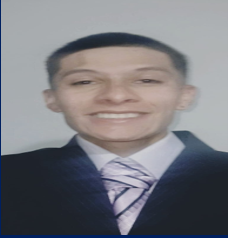

Trabajador inversionista y estudiante de Ingeniería en Software, enfocado en el cumplimiento de objetivos y en superar constantemente las expectativas. Actúo con disciplina y constancia, siempre orientado a mejorar resultados y a ir más allá de los límites establecidos. Me adapto con facilidad a cualquier entorno, aporto soluciones efectivas y mantengo una mentalidad de progreso, seguro de que el éxito me sigue en cada paso que doy.